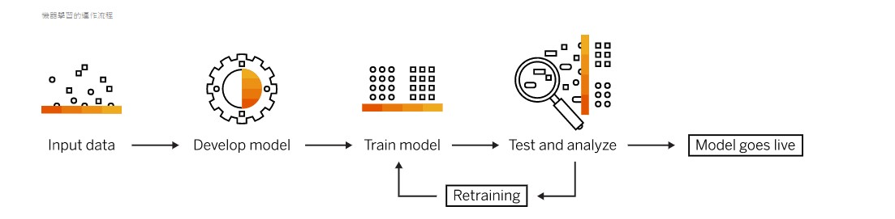

與機器學習的關係
學習規則
機器學習包含不同類型的學習模式，並使用各種演算技術，根據資料的性質和期望結果，可以採用監督式、非監督式、半監督式或強化式共四種學習模式。在各個模式中可以套用一或多種演算法技術，取決於使用的資料集和預期結果。
機器學習演算法主要用於分類事物、辨識模式、預測結果，並做出周全的判斷。分析複雜且難以預測的資料時，您可以選擇使用一種演算法，或是組合多種演算法以達到最佳的準確性。

回首頁
基本結構
監督學習
無監督學習
增強學習
實用性
學習過程
Copyright © 16+26 All Rights Reserved.